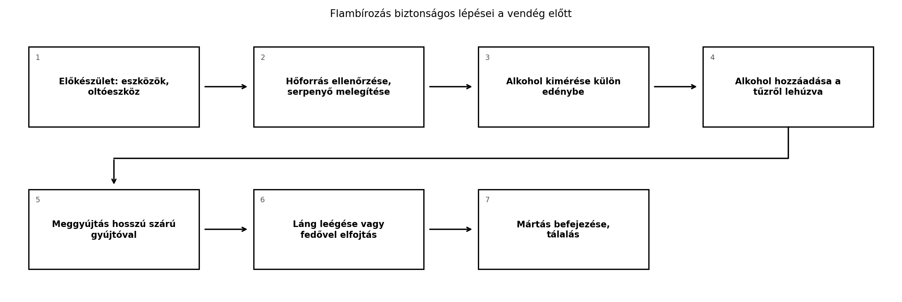

A vendég nem csak enni jön az étterembe, hanem élményt is vár. Amikor a szakács vagy a felszolgáló az asztalnál fejezi be az ételt – meggyújtja a konyakot, felszeleteli a sültet, eligazgatja a mártást –, a vendég látja a szakértelmet, és jobban bízik az ételben. Ez a művelet azonban nem egyszerű látványelem: nyílt láng, forró eszközök, kész étel és vendég kerül egyszerre egy kis térbe. Ha a technológia vagy a biztonság hibázik, az arcéget, tüzet, keresztszennyeződést vagy allergiás reakciót okozhat. Ezért ebben az alfejezetben a látvány mögötti fegyelmezett, higiénikus és tűzbiztos munkát tanulod meg.
Képzeld el, hogy egy hatfős asztaltársaság rendel egy „steak au poivre flambé” ételt. A konyhából egy guruló kocsit tolnak az asztalhoz. A kocsin egy kis gáz- vagy elektromos melegítő (réchaud) áll, rajta réz vagy rozsdamentes serpenyő. Mellette sorakozik a kimért konyak, a tejszín, a bors, a fedő, a hosszú szárú gyújtó és az oltótakaró. A szakács előbb a serpenyőben megolvasztja a vajat, átmelegíti a bélszínérmeket, majd lehúzza a lángról a serpenyőt, hozzáadja a konyakot, meggyújtja, és hagyja, hogy a kék láng rövid ideig égjen. Amikor a láng elalszik, visszateszi a tűzre, befejezi a mártást, és a vendég tányérjára tálal.

A folyamat közben a legfontosabb elv: a nyitott palack soha ne kerüljön a láng közelébe: a láng mellé csak a kimért alkohol kerül.
A felszerelt kocsin minden eszköznek állandó helye van (lásd az ábrát): a guéridon (1) kerekeit munka előtt rögzítjük, a felső lapon áll a réchaud (2) az elzárószeleppel, rajta a flambírozó serpenyő (3); mellette a kimért alkohol kis mérőedényben (4), a hosszú szárú gyújtó (5), a szeletelőkés, a villa és a deszka (6), valamint a meleg tálalótányérok (7). Az alsó polcon a fém fedő és az oltótakaró (8) mindig kéznél van.
A palack nincs a kocsin a láng közelében: csak a kimért mennyiség kerül oda. A HTML-kiadásban egy részre mutatva megjelenik a neve és a hozzá tartozó biztonsági szabály.
Definíció. A vendég előtti ételkészítés (idegen szóval guéridon-szerviz) olyan éttermi művelet, amelynek során a kész vagy majdnem kész ételt a vendég asztala mellett fejezik be, tálalják vagy szeletelik. Célja a frissesség, a látvány és a személyes kiszolgálás érzése.
Definíció. A réchaud (ejtsd: résó) asztali melegítő készülék. A vendég előtti munkához a kocsin gázpalackkal, elektromos fűtéssel vagy pasztillás hőforrással működő változatát használják. A lángereje kicsi, éppen a melegen tartásra, a mártás befejezésére és a flambírozásra való.
Definíció. A flambírozó kocsi (guéridon) guruló, hőálló felületű asztal, amelyen a réchaud, a serpenyő, az eszközök és a fűszerek biztonságosan elhelyezhetők. A kocsi alján legyen stabil hely a fedőnek, az oltótakarónak és a tiszta konyharuhának.
Definíció. A flambírozás (flambage) olyan befejező művelet, amelynek során az ételhez alkoholtartalmú italt adnak, azt meggyújtják, és a láng rövid ideig ég. A láng elégeti az alkohol egy részét, az ételnek jellegzetes, enyhén édeskés, pörkölt aromát ad, a mártás pedig besűrűsödik.
Definíció. A trancsírozás (szeletelés a vendég előtt) a kész sült hús, hal vagy szárnyas felszeletelése az asztalnál, szakszerű vágási sorrenddel. Célja, hogy a vendég forrón, egyenletes szeletekben kapja az ételt, és ne száradjon ki a nagy darab a konyhában.
Szabály. Eszközt csak akkor vigyél a vendég asztalához, ha tiszta, száraz, hőálló és a művelethez valóban szükséges. A fölösleges kellék növeli a balesetveszélyt.
| Eszköz | Mire való | Biztonsági vagy higiéniai megjegyzés |
|---|---|---|
| Réchaud | Melegítés, flambírozás | Ellenőrizd a lángot, a gáztömítést, a stabil állást |
| Flambírozó serpenyő | Mártás, hús átmelegítése | Ne legyen túl mély, hogy a láng jól látható legyen |
| Fém fedő | A láng elfojtása, fröccsenés ellen | Mindig kéznél legyen |
| Hosszú szárú gyújtó | Biztonságos meggyújtás | Arc és haj messze maradjon |
| Oltótakaró, a helyi tűzvédelmi szabályzat szerinti, folyadéktűzre (B) is alkalmas kézi tűzoltó készülék (ellenőrizendő: OTSZ, a készülék címkéje) | Kiömlött, égő alkohol és zsiradék oltása | Tilos vízzel oltani |
| Szeletelő kés, villa, deszka | Hús, hal, szárnyas szeletelése | Csak kész ételhez használd |
| Meleg tányérok | Azonnali tálalás | A hideg tányér kihűti az ételt |
| Kínáló evőeszközök, mártásos kancsó | Adagolás, mártásozás | Tiszták legyenek, allergén-keresztszennyeződés nélkül |
Megjegyzés. A gázüzemű réchaud-t használat előtt mindig ellenőrizd: a csatlakozás ne szivárogjon, a láng ne lobogjon, és a kocsi ne álljon függöny, szalvéta vagy papír közelében. Elektromos réchaud-nál a kábelt úgy vezesd, hogy ne lehessen felrúgni.
A flambírozás a vendég előtti munka legnagyobb tűzkockázatú művelete. A Tűzvédelem a konyhán alfejezetben tanultad, hogy a zsiradéktüzet vízzel oltani tilos, mert a víz gőzrobbanást okoz. Az égő alkohol folyadéktűz (B osztály), a zsiradéktűz F osztályú; mindkettőt fedővel vagy oltótakaróval fojtjuk, vízzel egyiket sem oltjuk.
Definíció. Flambírozásra elsősorban magas alkoholtartalmú, tiszta párlatot használunk: konyak, brandy, rum, calvados, a magyar gyakorlatban néha barackpálinka. A cukros likőr (pl. narancslikőr) kis mennyiségben aromát adhat, de önmagában hajlamos leégni és keserűvé válni. A gyenge bor vagy a sör nem flambírozásra való.
Összefüggés. A láng csak akkor ég, ha az italból elpárolgó alkoholgőz meggyullad. Minél magasabb az alkoholtartalom, annál könnyebb meggyújtani. A cukros italokban a cukor is karamellizálódik, ezért a serpenyő alja odakaphat.
Allergén. Az alkoholtartalmú italban lévő szulfitok allergének lehetnek. A vendég előtti munkánál a pontos összetételt a gyártói címke és a receptúra adja. Ha a vendég kérdez, a szulfittartalomról is tájékoztatni kell (ellenőrizendő: hatályos allergénjelölési szabály).
Tilos. Az alkoholt soha ne öntsd a palackból a láng vagy a forró serpenyő közelébe. A palackban keletkező gőz visszacsaphat, és a palack lángszóróként viselkedhet. Mindig külön kis mérőedénybe öntsd ki a szükséges mennyiséget.
Biztonsági szabályok flambírozáshoz
Eljárás. Flambírozás lépései
A képsor ezeket a lépéseket hat képkockában mutatja: (1) a környezet és az eszközök ellenőrzése (1. lépés), (2) az alkohol kimérése (2–3. lépés), (3) a serpenyő lehúzása és a beöntés (4–5. lépés), (4) a gyújtás hosszú szárú gyújtóval (6. lépés), (5) a láng leégése, szükség esetén fedővel elfojtva (7. lépés), (6) visszahelyezés a hőforrásra (8. lépés). Alul a helyes és a hibás mozdulat áll egymás mellett.
A leggyakoribb és legveszélyesebb hiba a jobb alsó képen látható: palackból öntés a láng fölé, amikor a láng visszacsaphat a palackba. A vendég távolsága (kb. 1–1,5 m) tájékoztató érték, a helyi tűzvédelmi szabályzat a mérvadó (ellenőrizendő). A HTML-kiadásban a képkockákat lépésenként lejátszhatod.
Példa. A crêpes Suzette klasszikus flambírozott palacsinta. A serpenyőben vajat, cukrot, narancslevet és narancshéjat melegítesz; a vékony palacsintákat átmelegíted, meglocsolod narancslikőrrel és konyakkal, majd meggyújtod. A láng leégése után a mártás sűrű, illatos, a palacsintákat összehajtva tálalod. Az étel allergénjei: glutén (liszt), tojás, tej (vaj), esetleg szulfit (alkohol).
Példa. A flambírozott bélszín (steak au poivre flambé) esetében az elősütött bélszínérmeket a serpenyőben vajjal átmelegíted, frissen őrölt borsot adsz hozzá, meglocsolod konyakkal, meggyújtod, majd tejszínnel befejezed a mártást. A maghőmérséklet a vendég kérésétől és a HACCP-tervtől függ; ha a vendég rózsaszínre kéri, a nyers hús kockázatát előre tisztázni kell (ellenőrizendő: üzemi szabály). A mártás tejallergént és esetleg szulfitot tartalmazhat.
A vendég előtti szeletelés akkor szakszerű, ha a hús nem szárad ki, a szeletek egyenletesek, és a művelet gyors. A konyhában előkészített eszközökkel dolgozz.
Szabály. A sült húst sütés után pihentesd 5–10 percig, nagyobb darabot akár 15–20 percig is (ellenőrizendő: üzemi érték). A pihentetés alatt a rostok közötti lé eloszlik, így szeleteléskor nem folyik ki azonnal.
Összefüggés. A húst a rostokra merőlegesen kell szeletelni. Ha a rosttal párhuzamosan vágsz, hosszú rostok maradnak a szeletben, és a falat rágós lesz. A merőleges vágás rövid rostokat hagy, ettől a hús puhábbnak érződik.
Eljárás. Szeletelés lépései
Példa. A marhabélszín egyenletes, hengeres izom, a rostok hosszantiak. A sültet ferdén, 1–1,5 cm vastagra szeleteld, így nagyobb felület látszik. A sertéskarajt csonttal együtt sütve a csont mentén válaszd le, majd a csont nélküli részt szeleteld. A csirkét ízületeknél bontsd: előbb a combot, majd a szárnyat választod le, végül a mellet a mellcsont mentén; a mellszeletet rostokra merőlegesen vágd. A halat a gerinc mentén, a bőr felől óvatosan fejtsd le, a filét adagold.
Az ábra (a) része a rostirány szerepét mutatja: a bélszínt a rostokra merőlegesen szeleteljük, így a szeletben rövid rostok maradnak; a rostokkal párhuzamos vágás hosszú, rágós rostokat hagy. A (b) rész a sült csirke bontási sorrendjét számozza (1 comb, 2 szárny, 3 mell leválasztása, 4 a mell szeletelése), a (c) rész a hal filéjének leemelését (1 bemetszés a kopoltyú mögött, 2 vágás a gerinc mentén, 3 a filé leemelése).
Vágás előtt mindig nézd meg, merre futnak a rostok – a sült felületén a csíkozottság mutatja. A HTML-kiadásban a vágások sorrendjét lépésenként lejátszhatod.
Higiénia. A vendég előtti szeletelőeszközök csak kész étellel érintkezhetnek. Ha előtte nyers húst, tojást vagy zöldséget vágtál, azonnal mosd el az eszközt, vagy használj másikat. A kész hús leve is keresztszennyezettséget okozhat, ezért a tálcát és a deszkát a művelet után forró mosogatószeres vízzel tisztítsd.
Kritikus pont. A vendég előtti hosszas szeletelés közben a hús maghőmérséklete a veszélyes zónába csökkenhet. A kész étel melegen tartása legalább 63 °C-on történjen, a gyors tálalás pedig csökkenti a kockázatot (ellenőrizendő: NÉBIH-útmutató, HACCP-terv). A nyers vagy rózsaszínre sütött hús fogyasztása kockázatot jelent; a vendéget erről a menü jelölje.
A vendég előtti tálalás nem csak kézügyesség, hanem kommunikáció is. A vendég látni akarja, mit eszik, és jogos kérdései lehetnek.
Szabály. A tányért melegen tartsd: a meleg tányér lassítja az étel kihűlését. A tányért 60 °C körüli hőmérsékletre melegítsd (tanulási érték; az üzemi előírás ellenőrizendő). A mártást és a köretet közvetlenül tálalás előtt add az ételhez.
Tálalási sorrend egy tányéros főételnél
Példa. A flambírozott bélszín tálalásakor először a burgonyapürét helyezd a tányérra, mellé két bélszínérmet, a borsos tejszínes mártást ferdén öntsd alá, és frissen őrölt borssal szórd meg a tetejét. A tányért ne zsúfold tele, mert a vendég látni akarja az alkotóelemeket.
Kommunikáció szabályai. Tömören és érthetően beszélj. Mondd el, mi az étel, milyen hőfokon készült, és ha a vendég kérdezi, milyen allergéneket tartalmaz. Ha nem tudod pontosan, ne találj ki adatot: mondd, hogy utánanézel a receptúrában vagy az allergéntáblázatban. Soha ne ígérj „gluténmentes” vagy „tejmentes” ételt, ha a konyhában keresztszennyeződés lehetséges. Az allergiás vendégnek a pontos tájékoztatás és az elkülönített tálalás a biztonságos út.
Allergén. A vendég előtt készült ételeknél a leggyakoribb allergének: glutén (palacsinta, panír, tészta), tojás (palacsinta, krém), tej (vaj, tejszín, sajt), mustár (mártás), zeller (alaplé), szulfit (bor, párlat, aszalt gyümölcs), diófélék (likőr, díszítés). A szószos, flambírozott ételeknél gyakran több allergén is jelen van; ezeket a tálalás során a vendég kérésére pontosan fel kell tudni sorolni.
A vendég előtti munkánál is előre ki kell számolni a nyersanyagot, hogy ne fogyjon el a vendég előtt, és ne is maradjon sok felesleg. A számítás az általános adagszám-képlet alapján történik: , ahol az adagszám, az egy adagra jutó mennyiség.
Számítás.
Adott: 6 adag, adagonként 180 g megtisztított, nyers bélszín (tálalási
tömege a sütési veszteség után kb. 150 g, ha a veszteség ~15 %, tanulási
érték), 10 g vaj, 15 ml konyak, 50 ml tejszín, 120 g burgonyapüré.
Keresett: a teljes anyagszükséglet.
Ellenőrzés. A szilárd nyersanyagok összege , a folyadékok ; adagonként ≈ 310 g szilárd nyersanyag és 65 ml folyadék, ami reális. Ez nyersanyag-szükséglet, nem kész tányértömeg: a konyak nagyrészt elég, a tejszín beforr, a bélszín sütési veszteséget szenved. A gyakorlatban a veszteséget és a tálalási maradékot a HACCP és a receptúra szerint kell hozzáadni.
Cél. Készíts 4 adag borsos-tejszínes bélszínérmet, flambírozd biztonságosan, és tálald a vendég előtt.
Eszközök és anyagok: réchaud, flambírozó serpenyő, fém fedő, hosszú szárú gyújtó, oltótakaró, folyadéktűzre (B) is alkalmas kézi tűzoltó készülék, vágódeszka, szeletelő kés, villa, meleg tányérok, 720 g bélszín, 40 g vaj, 60 ml konyak, 200 ml tejszín, frissen őrölt bors, só, 480 g burgonyapüré.
Biztonsági korlát. Ezt a műveletet tankonyhán vagy oktatói felügyelettel gyakorold; otthon csak a leírt biztonsági feltételekkel. A flambírozást csak akkor végezd, ha a helyiség szellőzik, és éghető anyag nincs a közelben.
Higiéniai előkészület. Moss kezet, viselj tiszta kötényt, a hajad legyen hátrakötve. Ellenőrizd a kész bélszín maghőmérsékletét maghőmérővel, a legvastagabb részbe szúrva. A munkafelületet fertőtlenítsd, a nyers hústól elkülönített eszközöket használj.
Számozott lépések
Ellenőrzési pontok. A láng nem csaphat fel 20–30 cm-nél magasabbra; ha igen, fedővel fojtsd el. A hús maghőmérséklete a tálaláskor legalább a HACCP-terv szerinti érték legyen. A mártás sűrű, krémes, nem csomós. Minden adag 180 g nyers bélszínből (kb. 150 g kész húsból) és arányos köretből álljon.
Dokumentálás. Írd fel a hús tálalási hőmérsékletét, a felhasznált konyak mennyiségét és a vendég allergénnel kapcsolatos kérdését, ha volt. A balesetveszélyes mozzanatot jelentsd az oktatónak.
A vendég előtt készült ételnél egyszerre ellenőrizzük az érzékszervi és a mérhető jellemzőket.
Hiba: A szakács a palackból önti az alkoholt a forró serpenyőbe. Ok: sietség, kényelem, nincs előkészített mérőedény. Következmény: a palackban lévő gőz meggyulladhat, a láng visszacsap, súlyos égési sérülést okozhat. Helyes gyakorlat: az alkoholt előre külön edénybe mérjük, a palackot elzárva, távolabb tartjuk.
Hiba: Túl sok alkoholt adnak az ételhez, és hatalmas láng csap fel. Ok: nincs adagolási előírás, a látvány fokozása. Következmény: leég a mártás, keserű íz, tűzveszély, a vendég megijed. Helyes gyakorlat: a receptúrában rögzített mennyiséget (pl. 10–15 ml/adag) kis mérőedényből adagoljuk, a lángot fedővel fékezzük.
Hiba: A húst rostirányban szeletelik. Ok: a rostok irányát nem figyelik meg. Következmény: a hús rágós, a vendég elégedetlen. Helyes gyakorlat: pihentetés után a rostokra merőlegesen, ferdén szeletelünk.
Hiba: A tányér hideg. Ok: a tányérmelegítő nem üzemel, vagy a tálalás lassú. Következmény: az étel pár perc alatt kihűl, a mártás megdermed. Helyes gyakorlat: a tányért 60 °C körülire melegítjük, a tálalást gyorsan, sorrendben végezzük.
Hiba: A vendég allergiás, de a szakács nem tudja pontosan, van-e tej a mártásban. Ok: hiányos allergén-tájékoztatás, a receptúra nem elérhető a tálalóhelyen. Következmény: a vendég kockázatot vállal, vagy lemond az ételről, rosszabb esetben reakció lép fel. Helyes gyakorlat: a kocsin legyen allergéntáblázat, a szakács csak azt mondja, amit bizonyítani tud; kétség esetén ellenőrzi a receptúrát.
Egy szállodai étteremben a szakács crêpes Suzette-et készített a vendég asztalánál. A serpenyő forró volt, a palacsinta a narancsos vajban illatozott. A szakács sietett, mert a terem tele volt. A konyakot a palackból akarta a serpenyőbe önteni. A palack szájánál keletkező alkoholgőz meggyulladt, a láng visszacsapott. A szakács ijedtében elejtette a palackot, de szerencsére az oltótakaróval azonnal elfojtották a kis tüzet. A vendég nem sérült meg, de az élmény rosszul sült el. A vizsgálat szerint a szakács a sietség miatt kihagyta a biztonsági előkészítést: nem volt külön mérőedény, és a fedő sem volt kéznél.
Tanulság. A flambírozás nem gyorsítható meg a szabályok kihagyásával. Az alkoholt külön edényből mérjük, a fedőt és az oltótakarót már a gyújtás előtt előkészítjük. A vendég előtti látvány csak akkor szolgáltatás, ha mögötte fegyelmezett biztonsági munka áll.
1. feladat (A). Nevezd meg a flambírozó kocsi öt eszközét, és írd le egy mondatban, mire való.
2. feladat (A). Számítsd ki 10 adag bélszín tömegét, ha 1 adag 180 g. Add meg kilogrammban is.
3. feladat (B). Állítsd helyes sorrendbe a
flambírozás lépéseit: a) meggyújtás hosszú szárú gyújtóval,
b) alkohol kimérése külön edénybe,
c) tálalás meleg tányérra,
d) serpenyő lehúzása a tűzről,
e) előkészület és eszközellenőrzés,
f) mártás befejezése a tűzön.
4. feladat (B). Egy vendég azt kérdezi, tartalmaz-e tejet a flambírozott bélszín mártása. Milyen forrásból válaszolsz, és mit mondasz, ha a receptúra szerint tejszín van benne?
5. feladat (C). Tervezz 8 fős vendég előtti tálalást flambírozott bélszínnel. Írd le: milyen eszközök kellenek, mennyi nyersanyag (bélszín, vaj, konyak, tejszín, köret), és milyen biztonsági pontokat ellenőrzöl a művelet előtt.
6. feladat (D). A gyakorlaton a láng túl magas lett, és a szakács majdnem a palackból öntött utána alkoholt. Elemezd a hibát: mi volt a hiba, miért veszélyes, és mi a helyes javítás?
Önellenőrzés – válaszok
1. feladat megoldása.
A flambírozó kocsi eszközei lehetnek: réchaud (melegít), flambírozó
serpenyő (étel készítése), fém fedő (láng elfojtása), hosszú szárú
gyújtó (biztonságos gyújtás), oltótakaró (zsiradéktűz oltása), szeletelő
kés, meleg tányérok.
2. feladat megoldása.
Adott:
,
.
Képlet:
.
Behelyettesítés:
Ellenőrzés: 10 adag 180 g valóban 1,8 kg; a nagyságrend reális.
3. feladat megoldása.
Helyes sorrend: e) előkészület és eszközellenőrzés, b) alkohol kimérése
külön edénybe, d) serpenyő lehúzása a tűzről, a) meggyújtás hosszú szárú
gyújtóval, f) mártás befejezése a tűzön, c) tálalás meleg tányérra.
4. feladat megoldása.
Először a receptúrát vagy az allergéntáblázatot nézem meg. Ha a mártás
tejszínt tartalmaz, azt mondom a vendégnek: „Igen, a mártás tejszínt
tartalmaz, ez tejallergén. Ha szükséges, készíthetünk tejszín nélküli
változatot, de a keresztszennyeződés lehetőségét ellenőrizni kell.” Nem
ígérek tejmentességet, csak pontos tájékoztatást.
5. feladat megoldása.
Eszközök: réchaud, nagy serpenyő, fedő, hosszú szárú gyújtó, oltótakaró,
folyadéktűzre (B) is alkalmas kézi tűzoltó készülék, vágódeszka,
szeletelő kés, villa, 8 meleg tányér, mérőedény.
Nyersanyag 8 adagra: bélszín
;
vaj
;
konyak
;
tejszín
;
köret
.
Biztonsági pontok: eszközök stabilitása, oltóeszköz kéznél, alkohol
külön edényben, a láng magassága, a hús maghőmérséklete, a tányérok
melegek, allergén-tájékoztatás.
6. feladat megoldása.
Hiba: a láng túl magas lett, és a szakács a palackból akart alkoholt
hozzáönteni.
Ok: túl sok alkohol, illetve a palackból öntés kísérlete.
Veszély: a palackból kiáramló gőz meggyulladhat, visszacsapás, égési
sérülés.
Javítás: a lángot fedővel kell elfojtani, a hőforrást lezárni. A további
alkoholt csak külön mérőedényből, a tűzről lehúzott serpenyőbe szabad
önteni. A mennyiséget a receptúra szerint kell csökkenteni.
A vendég előtti ételkészítés akkor szakszerű, ha a látvány mögött biztonság és higiénia van. A flambírozáshoz tiszta, magas alkoholtartalmú párlatot használunk; az alkoholt külön edényből mérjük, a palackból öntés tilos. A lángot hosszú szárú gyújtóval gyújtjuk, fedő, oltótakaró és folyadéktűzre (B) is alkalmas tűzoltó készülék legyen kéznél (ellenőrizendő: OTSZ, készülék címkéje). A sült húst pihentetés után, rostokra merőlegesen szeleteljük. A halat a gerinc mentén, a szárnyast ízületek szerint bontjuk. A tányért előmelegítjük, a mártást és köretet forrón tálaljuk. A vendéget tömören, pontosan tájékoztatjuk az allergénekről; ha bizonytalanok vagyunk, nem ígérünk allergénmentességet. Továbbvitt eredmény. A flambírozás biztonsági lépéseit – külön edényből mérés, fedő és oltóeszköz kéznél tartása, a palackból öntés tilalma, a láng ellenőrzött leégése – a Büfé- és rendezvényételek tervezése és készítése alfejezetben is alkalmazzuk, különösen akkor, ha büfében vagy rendezvényen a tálalóhely közelében végeznek melegítést vagy befejező műveletet.
Ellenőrizendő forrástípusok: a hatályos Országos Tűzvédelmi Szabályzat előírásai a nyílt lángú készülékekre és a zsiradéktűz oltására; a munkavédelmi törvény követelményei a vendég előtti munkavégzésre; az 1169/2011/EU rendelet allergén-tájékoztatási kötelezettsége a vendéglátásban; a NÉBIH útmutatója a készétel melegen tartási hőmérsékletére és a keresztszennyeződés megelőzésére; az üzemi HACCP-terv; a gyártói adatlapok az alkoholtartalmú italok szulfittartalmáról. A 60 °C tányérhőmérséklet, a 10–15 ml/adag alkoholmennyiség, a 180 g bélszín és a 120 g köret tanulási adat; az üzemi receptúra és a hatályos előírások a mérvadók. A pihentetési idő 5–20 perc jelölt tanulási tartomány, amely húsfajtától és nagyságtól függ.